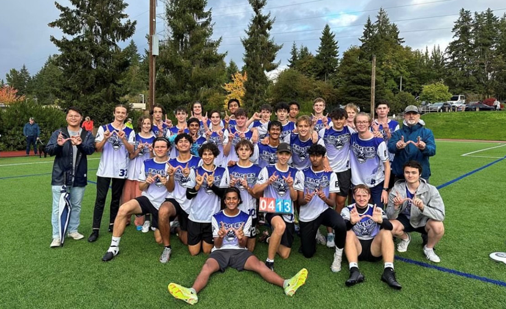
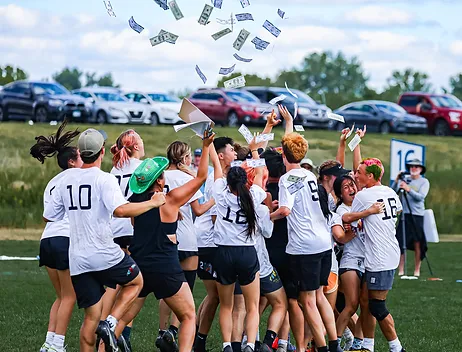

Interested in Playing Ultimate this season? Heres what you need to know!
Looking to play ultimate this year? here are a few valuble things to take note of:
- Tryouts begin in November for 9-10th Graders.
- Nationals and other bigger tournaments take place in spring.
- Most ultimate clubs range from having 22-24 players per team.
- Ultimate Clubs have 2 seasons: December - Late March, and June - Late August.
- For more details visit 7 Hills Ultimate for extra info!

Interview with Ultimate Players!!
We have met with a couple of Ultimate players at our school and this is what they had to say about tryouts:
How do tryouts work?
- How does the tryout start and end?
- The practice starts with a basic athletic warm-up, and you start with drills consisting of throwing and catching
- Then you move on to scrimmiging, and you play in your posistions you want the coach to see you as
- During the tryout, they pull several kids to offer them a spot, and for the rest of the tryout you continue scrimminging
- What should you do to prep for tryouts?
- First you should start by keeping in shape, working out constantly and stretching is the perfect way to start
- Its important to practice throwing and catching, also known as your fundamentals of ultimate
- Also its good to practice other skills such as running and cutting depending on your posisiton
- Make sure you also stretch a lot! Its very important to prevent broken bones
- What are some posistions you can play?
- Handlers, They focus on throwing, bucking, accuracy, and longer range throwing
- Cutters, They focus on lose defending, recieving, and short range thows
- Note: Even if you play a specific posistion, make sure you're getting practice around all skills!
Thank you to Simeon Murray and Eli Briggs for information!